Hướng dẫn Quản lý chi phí chung¶
1. Giao diện chung¶
1.1 Đăng Nhập¶

Màn hình đăng nhập
1.2 Giới thiệu giao diện¶
Trong OpenERP có các loại giao diện Tree, Form, Graph, Calendar, Kaban. Hiện tại chỉ sử dụng chủ yếu 02 loại giao diện là Tree và Form
1.2.1 Giao diện chính và giao diện Tree¶

Giao diện Tree view Payment
- Giải thích các ô đánh số trong khung mầu đỏ trên giao diện
1: Menu G.E & Expense: Là Menu nằm trên thanh ngang của hệ thống, Menu hiện thị danh mục các bảng dữ liệu thuộc phần chi phí 2: Danh mục bảng dữ liệu thuộc G.E & Expense
G.E & Expense: Dùng để nhập và lưu trữ thông tin về chi phí Supplier Payment: Dùng để nhập và Lưu trữ thông tin về thanh toán Yearly G.E Budget: Giao diện tổng hợp về Chi Phí Chung (Nhập budget và các thông tin cơ bản chi phí chung của 01 năm) Budgets: Dùng để nhập và lưu trữ Budget Departments: Dùng để nhập và lưu trữ nhân viên thuộc bộ phận phòng ban Update Allocated Expense: Dùng để tự động cập nhật trạng thái phân bổ chi phí.3: Nút Create: Dùng để tạo mới bản ghi 4: Nút Import: Dùng đưa dữ liệu vào hệ thống bằng file csv trong excel 5: Report/From, Action
Report /Form: Hiện thị danh sách báo cáo liên quan đến bảng dữ liệu Action: Hiện thị các chức năng xóa bản ghi, nhập xuất dữ liệu, Nhật ký nhập liệu. ...6: Ô Search: Nhập nội dung tìm kiếm dữ liệu 7: Hiện thị số bản ghi trên Treeview 8: Lựa chọn các cách xem dữ liệu
- Chon List view để xem dữ liệu kiểu Tree

- Chọn Form view để xem dữ liệu dạng Form

9: List bản ghi hiện thị ở dạng Treeview
1.2.2 Giao diện và các chức năng trên Form¶

- Nút Save: Dùng để lưu dữ liệu sau khi nhập mới hoặc sửa lại dữ liệu.
- Nút Discard: Dùng để hủy bỏ dữ liệu sau khi nhập mới hoặc sửa dữ liệu, nếu không muốn lưu dữ liệu vào hệ thống.
- Các nút xử lý quy trình dữ liệu
- Attachment(s): Dùng để đính kèm tài liệu vào bản ghi dữ liệu
- Nút dịch chuyển thứ tự trước sau của bản ghi dữ liệu
- Hiện thị trạng thái của dữ liệu theo quy trình
- Hiện thị các trang dữ liệu trong Form view
- Khu vực nhập dữ liệu
- Chú ý :
Trong khu vực nhập liệu 8, khi trường dữ liệu có màu vàng nhạt có nghĩa là bạn phải nhập dữ liệu vào không được bỏ trống, các trường khác có thể bỏ trống.
2. Nhập liệu Thông tin¶
2.1 Yearly Budget¶
2.1.1 Giao diện Yearly Budget¶

Giao diện khi ấn vào Yearly G.E Budget
2.1.2 Thông tin nhập liệu¶
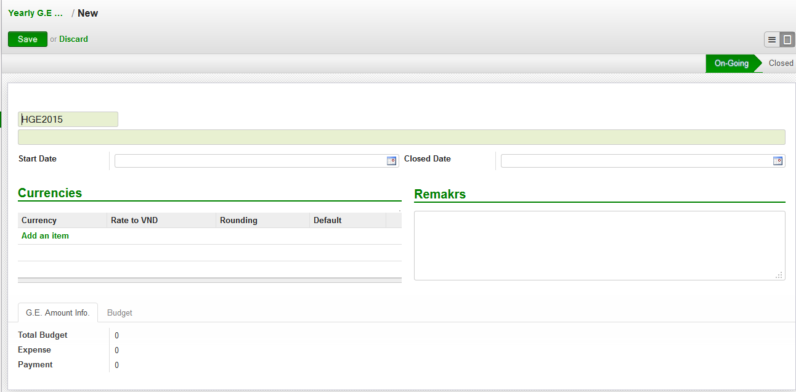Code Budget: Hệ thống tự động tạo Code theo năm. Start Date: Ngày bắt đầu phân bổ chi phí Closed Date: Ngày kết thúc phân bổ chi phí Currencies: Đơn vị tỷ giá Trang G.E. Amount Info.: Hiển thị thông tin tổng chi phí trong năm

Giao diện dữ liệu trang G.E. Amount Info. trong Yearly G.E Budget
Total Budget: Tổng chi phí dự kiến trong năm Expense: Tổng chi phí Trong năm Payment: Tổng trả cho chi phí trong năm Trang Budget
Code: Nhập Budget Code Amount: Nhập dự toán chi phí Expense: Chi phí theo khoảng thời gian (tính từ Start Date đến Closed Date) Payment: Chi phí phải trả theo khoảng thời gian (tính từ Start Date đến Closed Date) Balance: Chi phi còn lại theo khoảng thời gian (tính từ Start Date đến Closed Date) Over: Thông báo chi phí vượt quá dự toán hay không (Yes: là vượt quá chi phí và có màu đỏ, No là không quá chi phí)

2.2 Budget¶
2.2.1 Giao diện Budget¶
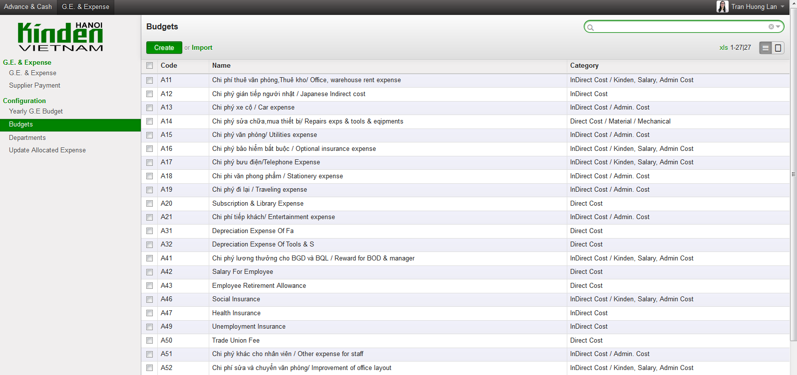Giao diện Budget
2.2.2 Thông tin nhập liệu¶

- Name: Tên Budget
- Code: Code Budget
- Category: Danh mục Budget
- Active: Tích chọn Code có dùng hay không
- General Expense: Tích chọn thuộc chi phí chung hay không
2.3 Department¶
Dùng để lưu trữ phòng ban
2.3.1 Giao diện mành hình Department¶
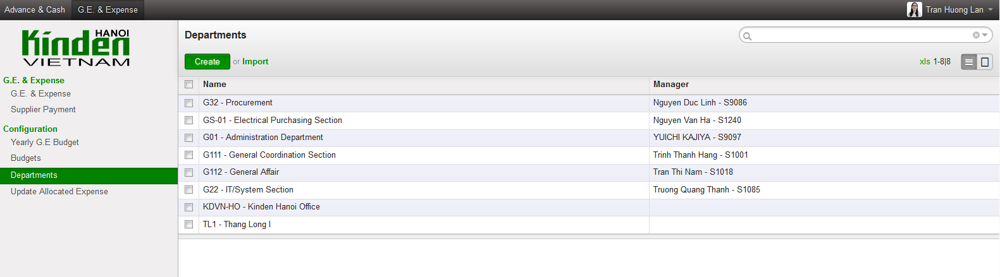
2.3.2 Thông tin nhập liệu¶

Giao diện tạo mới một Department
- Code: Mã bộ phận phòng ban
- Department Name: Tên bộ phận phòng ban
- Manager: Người quản lý bộ phận phong ban
- 2nd Manager: Phó bộ phận phòng ban
- G.E in Charges: Tích chọn để hệ thống điền tự động Section in Charges trong chi phí hay không
- Parent Department: Trực thuộc phòng
- Trang Expense: Hiện thị chi phí budget code trong năm của riêng bộ phận phòng ban
- Trang Member: Nhập nhân viên thuộc bộ phận phong ban

Giao diện sau khi ấn vào trang Members
Ấn vào nút Add để thêm nhân viên
2.4 Expense & Payment¶

Giao diện khi ấn vào General Expense trên danh mục Menu

Giao diện khi ấn vào Supplier Payment trên danh mục Menu
General Expense được chia làm 4 loại chi phí
- Expense: Chi phí chung
- Prepaid : Chi phí trả trước
- Fixed Asset : Chi phí cho tài sản cố định
- Allocated Expense: Chi phí phân bổ cho trả trước và tài sản cố định
2.4.1 Nhập liệu chi phí trường hợp Type là Fixed Asset¶
2.4.1.1 Thông tin nhập liệu¶

Giao diện tạo mới một General Expense
Giao diện có 3 trang chính


Trang Expense Details: Nhập thông tin về chi phí
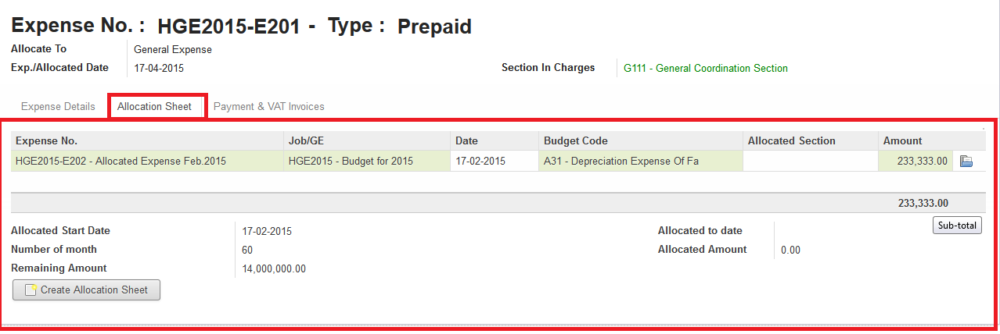Trang Allocation Sheet: Hiện thị phân bổ chi phi

Trang Payment & VAT Invoice: Hiện thị thông tin thanh toán và hóa đơn
2.4.2.2 Quy Trình nhập liệu¶
- Quy Trình tạo chi phí có Type là Prepaid hoặc Fixed Asset
Quy trình chi phí
Quy trình thanh toán:
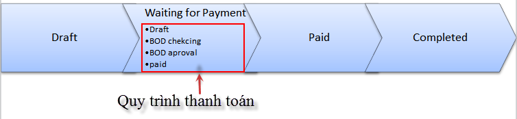
- Bước 1: Tạo Chi phí gồm thông tin:
- Expense No: Mã số chi phí
- Type: Kiểu chi phí
- Exp/Allocated Date: Ngày chi phí
- Section in Charges: Phòng ban của người tạo chi phí
- Supplier: Nhà cung cấp
- Address: Địa chỉ nhà cung cấp
- Scope of Work: Diễn giải chi phí
- Currency: Tiền tệ
- Ex.Rate: Tỉ giá
- Advance No: Mã số Advance
- Desc.: Diễn giải
- Amount: Số tiền chi phí
- Sau khi tạo một chi phí hoàn thành thông tin, ấn nút Submit để yêu cầu BOD ký duyệt. Trạng thái chi phí từ Daft sang Wait for Payment
Bước 2: Sau khi được BOD ký tiến hành làm Quotation, Trường hợp không được ký duyệt người dùng ấn vào trên Form chi phí để hủy bỏ yêu cầu chi phí. Nhập thông tin đầy đủ cho thanh toán.
- Payment No: Mã thanh toán
- R.O.P. Date: Ngày thanh toán
- Due Date: Ngày hết hạn thanh toán
- Expense No.: Mã chi phí
- Payment type: Kiểu thanh toán
- Supplier: Nhà cung cấp
- Applicant User: Người sử dụng
- Payee: Người trả
- Force Period: Thời kỳ kế toán
- Description: Diễn giải
- Job: Dự án
- Amount: Số tiền
Bước 3: Sau khi tạo một thanh toán ấn Submit đợi BOD ký duyệt, trạng thái thanh toán chuyển từ Draft sang BOD Checking.
- Bước 4: Sau khi được BOD ký duyệt ấn nút BOD approved để tiến hành làm thanh toán mua bán, Trạng thái thanh toán chuyển từ BOD checking sang BOD approved.
- Trường hợp không được ký duyệt người dùng ấn vào nút trên Form Supplier Payment để hủy bỏ.Nhập thông tin trên trang
- Trang VAT Invoices:
- VAT Inv. No.: Số hóa đơn VAT
- Date: Ngày hóa đơn
- Cur.: Loại tiền
- Sub-Total: Tiền trước thuế
- VAT (%): % thuế
- VAT: Tiền thuế
- Total: Tiền sau thuế
- In VND: Tiền VND
- @: Kiểu đơn vị tiền
- Received Date: Ngày nhận hóa đơn
- To Accounting Date: Ngày kế toán
- Returned Date: Ngày hoàn trả
- Trang Paid:
- Date: Ngày trả
- Journal: Kiểu thanh toán
- Period: Thời kỳ kế toán
- Currency: Kiểu tiền
- Bank: Ngân hàng
- Amount: Số tiền
- Ex.Rate: Tỷ giá
- State: Trạng thái
Sau bước 4: Trạng Thái thanh toán BOD approved sẽ chuyển sang Paid khi (1) Total Amount = (2) Total VAT = (3) Total Paid
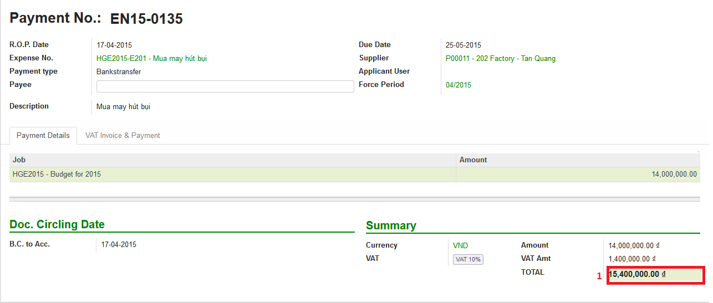
Trạng thái của chi phí sau bước 4 trạng thái chuyển sang Paid khi (1) Total Amount = (2) Total VAT = (3) Total Paid = (4) Total GE
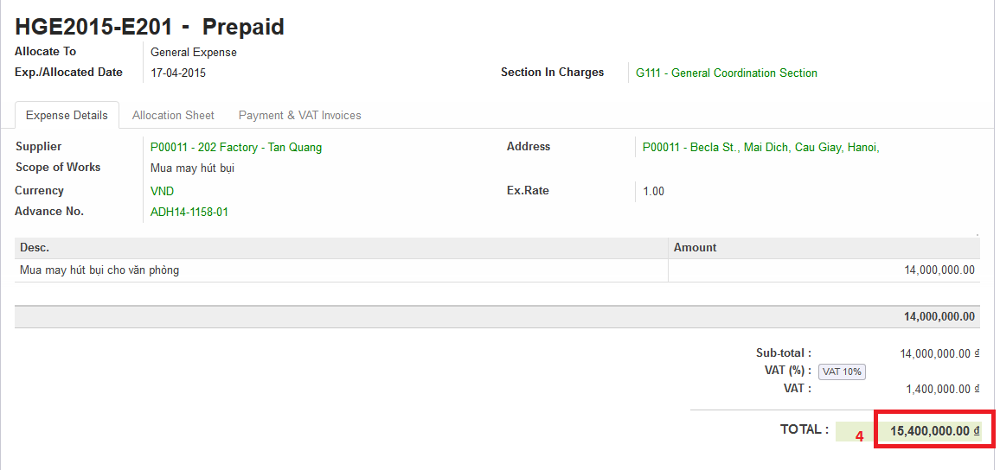Một chi phí kết thúc khi trạng thái ở Completed.
Trên hình trên chi phí chưa Completed do Amount G.E <> Amount phân bổ chi phí.Để chi phí Completed, tiến hành phân bổ chi Phí (Create Allocation Sheet)

Ấn nút trên giao diện để phân bổ chi phí

Giao diện tạo một phân bổ chi phí
- Nhập thông tin phân bổ chi phí:
- Start Date: Ngày bắt đầu tính phân bổ chi phí
- Number of month: Tống số tháng phân bổ chi phí
- Allocated to Section: Bộ phận sử dụng
- Budget: Code Budget
- Select: Lựa chọn số tháng được phân bổ trước (1 month, For And of this Year, Custom)
- 1 Month: hệ thông sẽ phân bổ 1 tháng lấy tháng nhập trong Start Date
- For and of this Year : phân bổ cho các thang trong năm tính từ tháng nhập trong Start Date.
- Custom: người dùng nhập tổng số tháng muốn phân bổ

Giao diện sau khi nhập và ấn Create Allocation Sheet trên giao diện Create Allocation Sheet


Giao diện sau tạo một thông tin Payment & Invoice, Paid
General Expense chuyển trạng thái Completed khi (1) Total Amount = (2) Total VAT = (3) Total Paid = (4) Total G.E Và (5) Amount G.E (Allocated) = (6) Amount G.E Và Trạng Thái General Expense Allocated Completed
*Ghi chú:
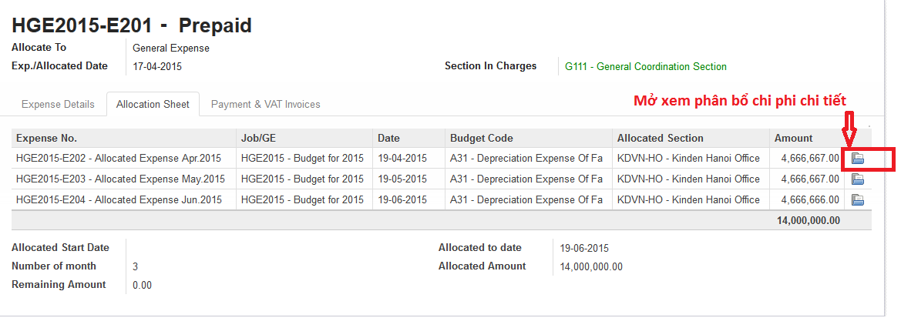
Giao diện hướng dẫn mở phân bổ chi phí
2.4.2 Nhập General Expense trường hợp Type là Expense¶
2.4.2.1 Thông tin nhập liệu¶
Expense No.: Hệ thống tự tạo sau khi người dùng chọn Job/G.E
Job/G.E: Hệ thống tự động điền Code năm hiện tại (có thể thay đổi khi lựa chọn lại Job Code).
Exp. /Allocated Date: Hệ thống tự động điền ngày hiện tại (Có thể nhập khác ngày)
Section in Charges: Hệ thống tự điện bộ phận phòng ban của nhân viên nhập liệu
- Trang Expense Detail:
- Supplier: Nhập nhà cung cấp
- Address: Địa chỉ nhà cung cấp
- Scope of Works: Diễn giải chi phí
- Currency: Tỷ giá giao dịch
- Advance No.: Nhập Code Advance
- Job/G.E: Nhập Job Code
- dget Code: Nhập Budget Code
- located Section: Nhập bộ phận phòng ban yêu cầu
- Amount: Nhập số tiền chi phí
Trang Payment & VAT Invoice: Hiện thị thông tin mua và trả của chi phí
2.4.2.2 Quy Trình nhập liệu¶
- Quy trình chi phí:

- Quy trình thanh toán:


Giao diện tạo một chi phí có Type là Expense
Bước 1: Tạo chi phí gồm thông tin nhập liệu trên, ấn Submit trạng thái chi phí chuyển từ Draft từ sang Waiting for Payment, đợi BOD ký duyệt

Giao diện sau khi tạo một chi phí
Sau khi ấn trên giao diện, trạng thái chuyển từ Draft sang Waiting for Payment
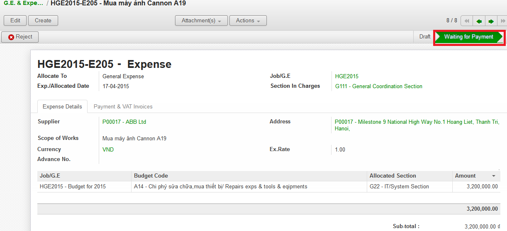Giao diện khi ấn nút Submit trên General Expense
Bước 2: Sau khi được BOD ký duyệt tiến hành làm Quotation

Giao diện khi ấn vào trang Payment & VAT Invoice trên General Expense
Click vào để tạo Payment

Giao diện sau khi ấn vào nút mở Payment
- Nhập thông tin đầy đủ cho thanh toán:
- Payment No: Mã thanh toán
- R.O.P. Date: Ngày thanh toán
- Due Date: Ngày hết hạn thanh toán
- Expense No.: Mã chi phí
- Payment type: Kiểu thanh toán
- Supplier: Nhà cung cấp
- Applicant User: Người sử dụng
- Payee: Người trả
- Force Period: Thời kỳ kế toán
- Description: Diễn giải
- Job: Dự án
- Amount: Số tiền
Bước 3: Sau khi hoàn tất điền thông tin chi phí ấn Submit đợi BOD ký duyệt chi phí, Trạng thái thanh toán chuyển từ Draft sang BOD checking. Trong trường hợp không được ký duyệt thì ấn nút Reject để hủy bỏ Payment.
Bước 4: Sau khi được BOD ký duyệt ấn nút BOD approved để tiến hành làm thanh toán mua bán, Trạng thái lúc này chuyển từ BOD checking sang BOD approved, trong trường hợp không được BOD ký duyệt ấn nút Reject để hủy bỏ Payment.
- Nhập thông tin trên trang:
- VAT Invoices:
- VAT Inv. No.: Số hóa đơn VAT
- Date: Ngày hóa đơn
- Cur.: Loại tiền
- Sub-Total: Tiền trước thuế
- VAT (%): % thuế
- VAT: Tiền thuế
- Total: Tiền sau thuế
- In VND: Tiền VND
- @: Kiểu đơn vị tiền
- Received Date: Ngày nhận hóa đơn
- To Accounting Date: Ngày kế toán
- Returned Date: Ngày hoàn trả
- Paid:
- Date: Ngày trả
- Journal: Kiểu thanh toán
- Period: Thời kỳ kế toán
- Currency: Kiểu tiền
- Bank: Ngân hàng
- Amount: Số tiền
- Ex.Rate: Tỷ giá
- State: Trạng thái
- Sau bước 4:
Trạng Thái BOD approved sẽ chuyển sang Paid khi (1) Total Amount = (2) Total VAT = (3) Total Paid


Trạng thái của chi phí sau bước 4 sẽ là Paid khi (1) Total Amount = (2) Total VAT = (3) Total Paid = (4) Total GE

- Ghi chú:
- Sau khi chi phí Completed, và thanh toán ở trạng thái Paid người dùng muốn sửa click vào nút Open để mở và sửa dữ liệu.
2.4.3 Quy Trình nhập liệu trường hợp là Allocated Expense¶
Trường hợp Allocated Expense là trường hợp dùng để phân bổ chí phí cho trường hợp Prepaid và Fixed Asset.
2.4.3.1 Thông tin nhập liệu¶

Giao diện tạo một chi phí chọn Type là Allocated Expense
Expense No.: Hệ thống tự tạo sau khi người dùng chọn Job/G.E
Job/G.E: Hệ thống tự động điền Code năm hiện tại (có thể thay đổi khi lựa chọn lại Job Code.)
Exp. /Allocated Date: Hệ thống tự động điền ngày hiện tại (Có thể nhập khác ngày)
Section in Charges: Chọn section của người đăng nhập
- Trang Expense Detail:
- Scope of Works: Diễn giải chi phí phân bổ
- Currency: Tỉ giá giao dịch
- Job/G.E: Nhập Job Code
- Budget Code: Nhập Budget Code
- Allocated Section: Nhập bộ phận phòng ban yêu cầu
- Fixed Amount/Prepaid
2.4.3.2 Quy trình nhập liệu¶
Quy trình chi phí

Để phân bổ chi phí có thể làm theo 2 cách. Cách 1: Là phân bổ luôn trên giao diện Chi phí có Type là Prepaid hoặc Fixed Asset.

Cách 2: Tạo Chi phí như thông thường và chọn Type là Allocated Expense

Cách 1 đã được hướng dẫn chi tiết trong phần 2.4.1 Nhập chi phí trường hợp Type là Fixed Asset, dưới đây là hướng dẫn cách 2.
Bước 1: Tạo phân bổ chi phi, ấn nút Submit để phân bổ chi phí cho Prepaid hay Fixed Asset.

- Ghi chú:
- Sau khi chi phí đã completed người dùng muốn sửa, ấn vào nút Open

Sau khi ấn Open giao diện xuất hiện 2 nút Reject và Close

Ấn nút Close để kết thúc chi phí Ấn nút Reject để đưa về Draft hoặc cancel chi phí
2.4.4 Nhập General Expense trường hợp Allocated to là Job & General Expense¶
Là những chi phí phát sinh được phân bổ cho Job dự án

2.4.4.1 Thông tin nhập liệu¶
Expense No.: Hệ thống tự tạo sau khi người dùng chọn Job/G.E
Type: Lựa chọn 1 trong các loại chi phí (Expense, Fixed Asset, Prepaid, Allocated Expense)
Allocated To: Chọn Job & General Expense
Job/G.E: Hệ thống tự động điền Code năm hiện tại (có thể thay đổi khi lựa chọn lại Job Code)
Exp. /Allocated Date: Hệ thống tự động điền ngày hiện tại (Có thể nhập khác ngày)
Section in Charges: Hệ thống tự điện bộ phận phòng ban của nhân viên nhập liệu
- Trang Expense Detail:
- Supplier: Nhập nhà cung cấp
- Address: Địa chỉ nhà cung cấp
- Scope of Works: Diễn giải chi phí
- Currency: Tỉ giá giao dịch
- Advance No.: Nhập Code Advance
- Job/G.E: Nhập Job Code dự án (có thể nhập Job Code General Expense)
- Budget Code: Nhập Budget Code
- Allocated Section: Nhập bộ phận phòng ban yêu cầu
- Amount: Nhập số tiền chi phí
Trang Payment & VAT Invoice: Hiện thi thông tin mua và trả của chi phí
2.4.4.2 Quy Trình nhập liệu¶
Quy trình xử lý theo loại chi phí. Và các loại chi phí đã được trình bày diễn giải trên, người dùng xem trên các phần 2.4.1, 2.4.2 và 2.4.3. Dưới đây là các bước chung cho chi phí được phân bổ cho Job dự án. Bước 1: Tạo Chi phí gồm thông tin nhập liệu trên, ấn nút Submit trạng thái chi phí chuyển từ Draft sang Waiting for Payment đợi BOD ký duyệt.
Bước 2: Sau khi được BOD ký duyệt, tiến hành làm Quotation. Nhập thông tin đầy đủ cho thanh toán:
- Payment No: Mã thanh toán
- R.O.P. Date: Ngày thanh toán
- Due Date: Ngày hết hạn thanh toán
- Expense No.: Mã chi phí
- Payment type: Kiểu thanh toán
- Supplier: Nhà cung cấp
- Applicant User: Người sử dụng
- Payee: Người trả
- Force Period: Thời kỳ kế toán
- Description: Diễn giải
- Job: Dự án
- Amount: Số tiền
Bước 3: Ấn nút Submit trên thanh toán, trạng thái thanh toán chuyển từ Draft sang BOD checking.
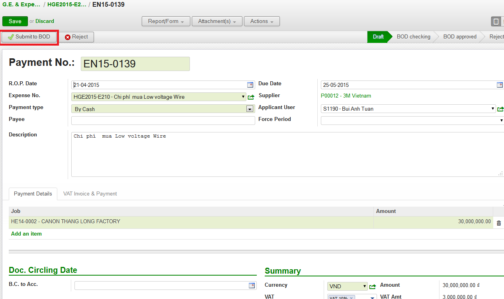Giao diện ấn nút Submit
Sau khi được BOD ký duyệt tiến hành thực hiện mua bán, ấn BOD approved trạng thái chuyển từ BOD checking sang BOD approved, trong trường hợp không được ký duyệt thì ấn nút Reject để hủy bỏ Payment.

Giao diện sau khi ấn nút Submit
Bước 4: Nhập thông tin VAT

- Thanh toán tự động chuyển trạng thái từ BOD approved sang Paid khi
- Payment Amount = VAT Amount = Paid Amount
3. Tìm Kiếm¶
Tìm kiếm được sử dụng ở giao diện Listview, có 2 cách tìm kiếm:
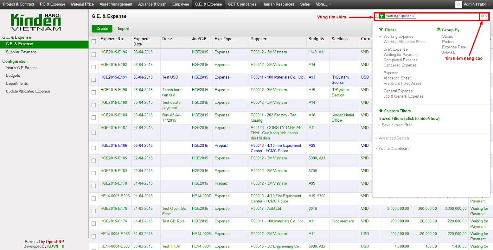Giao diện tìm kiếm
3.1 Tìm kiếm nhanh¶

Cách nhập nội dung tìm kiếm cơ bản
Khi bạn nhập vào nôi dung cần tìm, OpenERP sẽ liệt kê ra các tiêu chí tìm kiếm và bạn chọn đúng trường thích hợp theo miêu tả (bằng cách dịch chuyển mũi tên lên xuống ↑↓) rồi ấn Enter. OpenERP sẽ lọc hết các dòng dữ liệu phù hợp

Khi click chuột vào ô tìm kiếm
Ví dụ khi nhập thanh toán tiền taxi vào ô tìm kiếm.

chọn trường tìm kiếm trong ô tìm kiếm sẽ hiển thị các trường như trên. Dữ liệu này có thể nằm ở trong trường Description bạn chọn vào đây. OpenERP sẽ hiển thị ra các Description có từ này

hiển thị dữ liệu tìm kiếm Hiện tại trong phần tìm kiếm cơ bản bạn có thể tìm kiếm theo các trường Expense No., Description, Supplier, Budget, Detail/Job/Amount, Expense Date, Exp. /Allocated Date. Bạn có thể kết hợp nhiều điều kiện tìm kiếm.

kết hợp điều kiện tìm kiếm cơ bản Tìm kiếm các thanh toán có ngày Expense Date là 25-03-2015. thì sẽ được kết quả tìm kiếm như trên.
3.2 Tìm kiếm chi tiết (Advance Search)¶
Khi muốn biết cần tìm chính xác chi phí nào có giá trị nào, bạn vào Advance Search. Phần này có hầu hết các trường cần tìm kiếm.

Khu vực tìm kiếm chi tiết Ví dụ bạn muốn tìm kiếm các chi phí có Currency là USD.

Dữ liệu sau khi tìm kiếm
Lọc dữ liệu (Filters) Phần này để khoanh vùng các dữ liệu tìm kiếm và làm việc.

Vùng lọc dữ liệu 1 - Working Expense: Khi bạn vào G.E. & Expense sẽ mặc định trong filter. Phần này lọc tất cả các chi phí chưa hoàn thành (không ở trạng thái complete). 2 - Working Allocation Sheet: Phần này lọc các các chi phí ở dạng phân bổ chi phí ở trạng thái Draft. 3 - Draft Expense: Lọc các chi phí ở trạng thái Draft. 4 - Waiting for Payment: Lọc các chi phí ở trạng thái chờ thanh toán. 5 - Completed Expense: Lọc các chi phí ở trạng thái Complete. 6 - Cancel Expense: Lọc các chi phí sau khi đã hoàn thành. 7 - Expense: Lọc các cho phí ở dạng Expense. 8 - Allocation Sheet: Lọc tất cả các chi phí ở dạng Phân bổ chi phí. 9 - Prepaid & Fix Asset: Lọc các chi phí ở dạng trả tiền trước (ứng trước). 10 - General Expense: Lọc các chi phí chỉ là chi phí chung. 11 - Job & General Expense: Lọc các chi phí gồm cả chi phí chung và chi phí dự án.

Working Expense (lọc các chi phí chưa hoàn thành)
Giống như phần tìm kiếm nhanh. Bạn có thể kết hợp nhiều filter hay kết hợp filter và tìm kiếm nhanh.
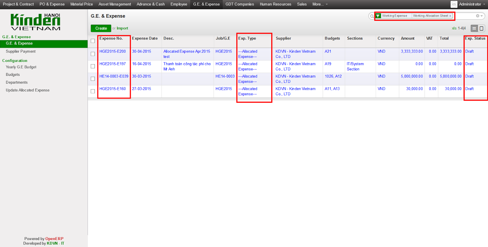
Lọc các chi phí đang hoạt động, ở dạng phân bổ chi phí. Ví dụ như trên là lọc các chi phí đang hoạt động, ở dạng phân bổ chi phí.
Lưu lại điều kiện tìm kiếm.

Vùng lưu điều kiện tim kiếm
Ví dụ bạn muốn lưu lại điều kiện tìm kiếm. Chi phí General Expense, là VND, và Tiền sau thuế lớn hơn 1,000,000. và lưu lại với tên là GE_VND

Chi phí chung, tiền VND, Tiền sau thuế lớn hơn 1,000,000, và lưu lại với tên là GE_VND Sau khi lưu mỗi lần vào sẽ không phải nhập lại điều kiện tìm kiếm này nữa. Mà chỉ cần click vào tên đã lưu.

Giữ nguyên điều kiện tìm kiếm